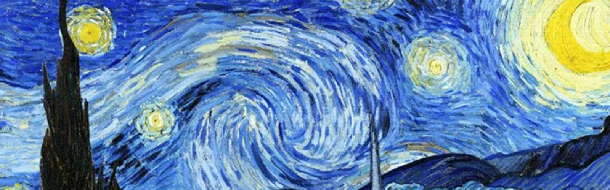

Expresionismo
El expresionismo fue un movimiento cultural surgido en Alemania a principios del siglo xx, que se plasmó en un gran número de campos: artes plásticas, arquitectura, literatura, música, cine, teatro, danza, fotografía, etc. Su primera manifestación fue en el terreno de la pintura, coincidiendo en el tiempo con la aparición del fauvismo francés, hecho que convirtió a ambos movimientos artísticos en los primeros exponentes de las llamadas «vanguardias históricas». Más que un estilo con características propias comunes, fue un movimiento heterogéneo, una actitud y una forma de entender el arte que aglutinó a artistas de tendencias muy diversas, así como de diferente formación y nivel intelectual. Surgido como reacción al impresionismo, frente al naturalismo y el carácter positivista de este movimiento de finales del siglo xix, los expresionistas defendían un arte más personal e intuitivo, donde predominase la visión interior del artista —la «expresión»— frente a la plasmación de la realidad —la «impresión»—.